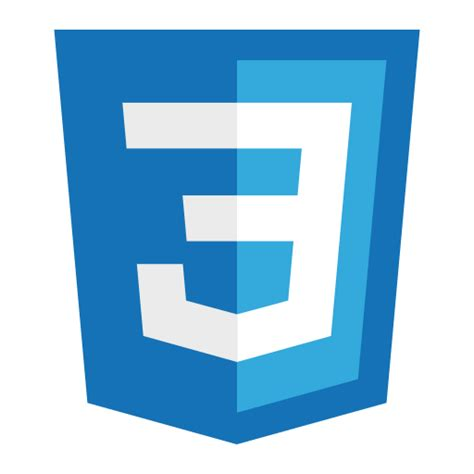
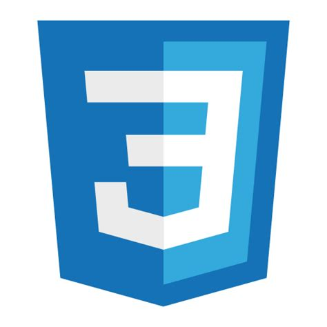

HTML
CSS
JAVASCRIPT

GITHUB
GIT

RESPONSIVE WEB DESIGN


HTML
CSS
JAVASCRIPT
GITHUB
GIT
RESPONSIVE WEB DESIGN
Soy un desarrollador front-end junior en busca de su primer empleo en el sector IT. He hecho las dos primeras certificaciones de FreeCodeCamp (Responsive Web Design y JavaScript Algorithms and Data Structures). Me concentro en escribir HTML accesible, usar prácticas modernas de CSS y escribir JavaScript limpio. Tambien aprendi de forma autodidacta git y github donde fui alojando mis proyectos. Actualmente me encuentro capacitandome de manera autodidacta(tanto leyendo documentacion como con youtube) en React y webpack. Resido en Buenos Aires, Argentina, pero tambien puedo trabajar de forma remota.
Ir al Portafolio